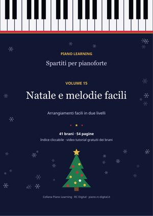
Volume 15Natale e melodie facili41 brani · 54 pagine3,99 €Acquista
Piano Learning · PDF
564 brani · 1.933 pagine di musica · 14 volumi · 10 lingue
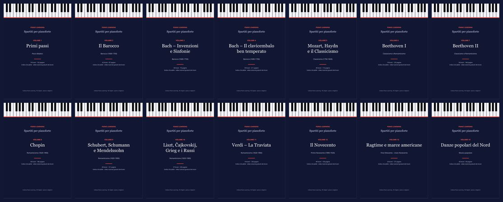
Tutti i 14 volumi: 564 brani, 1.933 pagine di musica.
55,86 €19,99 €−64%

Volume 15Natale e melodie facili41 brani · 54 pagine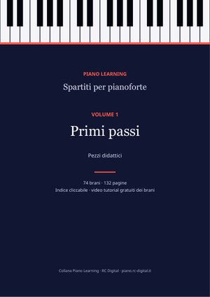
Volume 1Primi passi74 brani · 132 pagine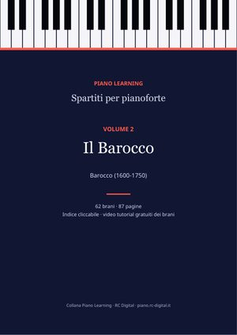
Volume 2Il Barocco62 brani · 87 pagine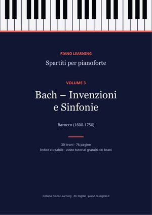
Volume 3Bach – Invenzioni e Sinfonie30 brani · 76 pagine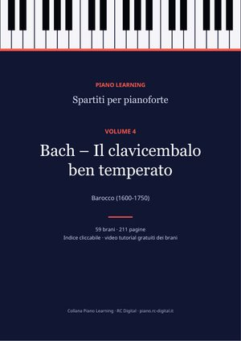
Volume 4Bach – Il clavicembalo ben temperato59 brani · 211 pagine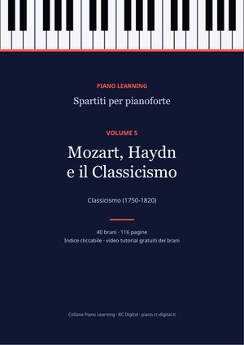
Volume 5Mozart, Haydn e il Classicismo40 brani · 116 pagine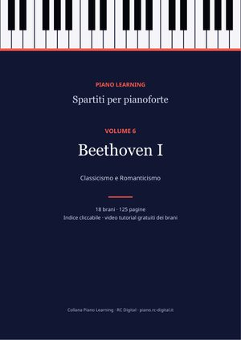
Volume 6Beethoven I18 brani · 125 pagine Volume 8Chopin46 brani · 186 pagine
Volume 8Chopin46 brani · 186 pagine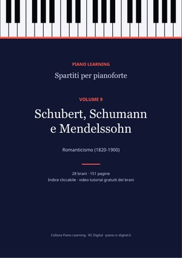
Volume 9Schubert, Schumann e Mendelssohn28 brani · 151 pagine Volume 10Liszt, Čajkovskij, Grieg e i Russi37 brani · 230 pagine
Volume 10Liszt, Čajkovskij, Grieg e i Russi37 brani · 230 pagine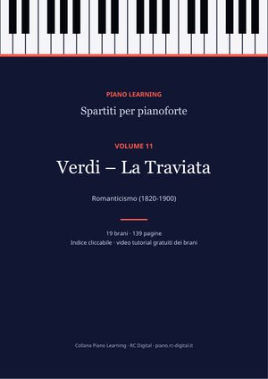
Volume 11Verdi – La Traviata19 brani · 139 pagine Volume 12Il Novecento40 brani · 136 pagine
Volume 12Il Novecento40 brani · 136 pagine Volume 13Ragtime e marce americane33 brani · 127 pagine
Volume 13Ragtime e marce americane33 brani · 127 pagine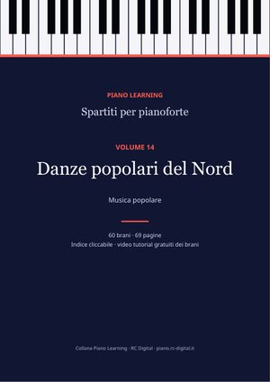
Volume 14Danze popolari del Nord60 brani · 69 pagineTocchi il titolo nell'indice e sei già alla pagina giusta. Ci sono anche i segnalibri.
Poche righe per sapere chi ha scritto la musica che stai suonando.
Dallo spartito al video con le note che scendono, per ogni brano che ce l'ha.
Con un solo acquisto scarichi l'edizione nella lingua che preferisci.
La prima pagina di quattro brani della collana. Tocca una pagina per aprire il brano.
In PDF. Li apri su computer, tablet e telefono e li puoi stampare. Ogni volume è un unico file con indice cliccabile e segnalibri.
Ogni acquisto comprende l'edizione in 10 lingue: italiano, inglese, tedesco, spagnolo, francese, portoghese, russo, cinese, giapponese e coreano. Scarichi quella che preferisci.
Subito dopo il pagamento si apre la pagina di download e ti arriva un'email con il link. Ogni volume singolo è un PDF; la collana completa è un file ZIP per lingua con i 14 PDF (circa 50 MB).
Sì. Sono edizioni libere (pubblico dominio o Creative Commons) e nelle pagine del sito trovi il link gratuito, brano per brano. Con la collana li hai tutti ordinati per autore e periodo, con indice, biografie, link ai tutorial e i crediti completi di ogni edizione.
No. Il Volume 15 «Natale e melodie facili» si acquista a parte a 3,99 €. La collana completa comprende i volumi da 1 a 14.
Pagamento sicuro con Payhip e download immediato per email. Gli spartiti sono edizioni libere (pubblico dominio o Creative Commons): li trovi anche gratis, brano per brano, nelle pagine del sito; qui li hai tutti ordinati in un solo file, con i crediti completi di ogni edizione.